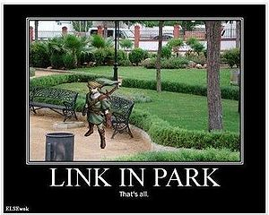

Linkin Park
 De: La Frikipedia, la enciclopedia extremadamente seria.
De: La Frikipedia, la enciclopedia extremadamente seria.
Linkin Park es una banda de rock proveniente de Beverly Hills, Los Angeles, Califarnia, su género musical es el rock-alternativo , poseen importantes Grammy's y varidas nominaciones. Según los integrantes del grupo y sus fanáticos , su inspiración musical viene de grupos de los 90' como: Take that, New kids on the block, Five, N' Sync, Barny y sus amigitos, los Backstreetboys, Hi-5, los Village People, Miguel Bose, Soda Estereo, los B-Sharps (Los Borbotones o los Solfamidas) y tropecientas más, combinando a cada uno de estas bandas tanto en el sentido emocional como en el sentido racional.
Desarrollo de la Banda
Los inicios de la banda se remontan entre el 1990 y algo cuando 4 jóvenes y un Dj (que por casualidad también era joven) deciden juntarse y tener sexo todos juntos en un parque y hacer aspirinas y para hacer sus possers.
´
Posteriormente se cuelan junto a Limp Bizkit etiquetandose como un grupo de Nu-Metal para opacar a las otras bandas de este género con un lenguaje mucho más grosero y una indumentaria que insultaba a la religión católica, logran llamar la atención y recibir las miradas lascivas del púbico sacerdotal.
Futuro futurista: Y vinieron días en que desapareció el éxito y la alegría entre los integrantes de la banda. Se espiaban se hablaban y miraban con recelo. Como fanaticos de la secta del beticismo, tocarán en el 2015 en el campo de concentración Nazi encontrado en Argentinao a lo mejor tambien en el estadio Ruiz de Lopera (para inaugurarlo de una puta vez), pero no saben si todavía llegarán a estar
Miembros y Ex-miembros viriles
Brad Delson, Rob Bourdon, Joe Hahn, Chester Bennington y muy lejos Mike Sin Honda.
- Link más conocido como Zelda (ocarina)
- Cheetos Bennington.(Si, el mismo de los Cheetos)(Ese tío que gritaba tanto que se llegó a cagar encima)
- Mark Wakefield (¿¡Quién coño es este tío!?)
- Mike Sin Honda más conocido como el puto multiusos. (Vocalista/MC/sampler/beats/guitarra /teclado/oboe/fagot/balalaila/flauta/arpa/alaraqueo/dabadungdibibibibibibumgabunbun/pandereta/maracas/beatbox/caja china/cello/pandereta otra vez...). Cuando era más joven, para sacarse perras para la carrera de Imagen y Sonido, tocaba en los parques (dónde si no) con un tambor pegado a la espalda, unos platillos encima del tambor, una guitarra y como rodilleras bocinas. Mike adoptó el nombre Sin Honda cuando su archienemigo el conductor patoso juró vengarse de él por robarle a su novio del instituto, robó su Honda y lo empotró contra otro coche, desde entonces es conocido como Mike Sin Honda.
Momento de la colisión de el conductor patoso con el Honda de Mike.
- Scott Koziol (alias El wino)
- Joe Hahn más conocido como Master Hand. (Mesa de mezclas, samples, descarga de música ilegal por internet y ese tipo de boludeces). Estudió el módulo de informática y desde ese momento no puede vivir sin un ordenata con el Virtual Dj, el Emule y un par de latiguillos de red para piratear internete y le vaya más rápido.
- Kyle Christener
- Brad Delson más conocido como Big Bang Baby o BBB. (Guitarrista)
- Rob Bourdon más conocido como Bosta. (baterísta)
- Dave Farrell más conocido comoCabeza de melón (se dice que en un conciero en vivo le quemaron el pelo con un soplete)(Bajista)
Simplecitos
Linkin Park son famosos por que consiguen hacer que cada disco suyo sea peor y mas soft que el anterior. ¿Qué como lo hacen? Sacando dos discos buenos,uno pop y otro que es una fumada más grande que la sexta temporada de LOST.
¿¡Quien coño es el de la derecha?!
Disco formulado por el grupo cuando llendo borrachos perdidos y habiendo fumado más Cosa verde que la que contiene el Santiago Bernabeu entraron en una clase de física cuántica y desmintieron 49 teorías en una mañana y sin acordarse de nada. Por eso es su mejor disco. Fue el disco más vendido en EEUU y el 2º de todo el mundo,y todavía hay gente que se cree jebi por escucharlo (yo incluído).
- "Papel cortado (porros evidentemente)"
- "One Step Close (no te gires,los tienes detrás)"
- "With Your Mother (con tu mamà, si, con la tuya)"
- "Punks of madurity"
- "Crawling Back to fuck You"
- "Fuck away"
- "Vamos a la playa"
- "In the pent"
- "A Place for my Hollow Head"
- "Frlsdptlmbjhtffhgfytfffcnygffsewfrgikyiyugaygvhxten" (La parte de atrás de a caja de disco no alcanzó para todo eso)
- "Cure For Itchy & Scratchy"
- "Pushing Me Far Far Away"
Cuando se les pasó el colocón del anterior disco tuvieron una "genial" idea. Hacer otro disco introduciendo más rap,pop y mucho más soft.Daba igual,iba a venderse como churros. Sin embargo sigue siendo bueno y si lo comparamos con el último es el maldito Nevermind
- "Foreword" (intro de 2 Horas 44 Minutos 52 Segundos, aproximadamente)
- "Don't stay or i fuck you"
- "Somewhere I´ll Be long"
- "El Bombón Asesino"
- "Paint"
- "Figura punto 69"(
la cagas wey, la cagas)
- "Breaking The Rabbit"
- "From The hoyo de tu vieja"
- "Nobody's Listening my record (aunque no es verdad)"
- "Penssion"
- "Dumb-ass"
- "Icier Turrón"
Según Linkin Park,con este disco tardaron más tiempo en hacerlo,gastaron mas dinero,necesitaron más apoyo y se lo curraron más. Sin embargo cometieron el error de escribirlo sobrios,y se nota. Aparte las últimas canciones del disco son una mierda de pop y hip-hop con mensajes subliminales. Y aún así,los "fans" más poser del grupo lo consideran el mejor disco. Si te gusta el grupo y tu disco favorito es este, suicídate (claramente es un plagio de la cancion Two Minutes To Midnight de Iron Maiden):
- Fuck the cows
- Rape me I liked
- No more zorro
- Qwerty
- Bleed It shit
- Seven Up yumi yumi
- Shadow of The Gay
- What the Fuck! yeah
- To two hands held boobs"
- The Little shits fuck You away
- What tha Hell!!!
Llegamos al antepenultimo disco (esperemos) de Linkin Park. La intención era buena. Con Minutos Pá la Medianoche se volvieron demasiado comerciales y estaban limpios.¿Solución? Encerrarse en un cuarto oscuro durante cuatro años probando drogas experimentales y grabando hasta los pedos de Mike. ¿Qué podía salir mal? ¿Quizás todo? Este disco es la mayor mierda electro-pop-rap de la historia. Tiene 21 canciones y 8 de ellas son discursos lava-cerebros,9 son mierdas poperas,3 son intentos de rap y jebi cutres y una: El ctalista (nueva serie de la FOX) es buena.Lo peor es que los fans gilipollas como yo nos lo compramos.
- The requiem of the requiem of the requiem (Rakim y Ken-Gay)
- iRradacion (Radiator Springs)
- Burning in the eskai (Mis Skys se estan quemando!!)
- Empty space War (Solo En el Espacio...Forever Alone)
- When they come to violate me
- Robot Gay
- Jornada del puto
- Waiting for te end
- Blackass (El hoyo de Chester despues de cagar petroleo)
- WrtWRTWrtes And Kings (Hijos de Puta y Rayes)
- Sabiduria, Paz y amor
- Iridisente (que mierda??)
- Falolout
- El catalista (WTF?)
- The Windows Live Messenger
Disco de rap metal-tecno raro. En esta ocasión Linkin Park decide dejar de hacer difinitivamente lo que seria metal para ser unos "artistas" de tecno tectonico, haciendo que la mayoria de fans lloren por rabia, impotencia, la crisis, deseperación pero que al mismo tiempo gusto;
- Lost in the Echo (La resonacia de Lost y el eco bipolar)
- In My Remains (Mis pelotas arden)
- Burn It Down (El Señor Burs me ha despedido en el amanecer)
- Lies Greed Misery (Lios Vergas Violación)
- I'll Be Gone (Illuminati)
- Castle of Glass (Castillo Glaseado)
- Victimized (Bazinga!)
- Roads Untraveled (Rodando Cabezas)
- Skin to Bone (Soy un Skinhead)
- Until It Breaks
- Tinfoil (Titties)
- Powerless (PowerRanger)
Como si con el otro no hubiera sido suficiente, este basicamente es lo mismo. Remix de canción anteriores, solo que con dos maracas y una bateria coreana. Lo único bueno de este CD, es que es el último disco (esperemos) de la banda;
- A Light That Never Comes (Me lo como "TO")
- Castle of Glass (Castillo de azucar)
- Lost in the Echo (Mi Amigo Killsonic Haciendo Dubstep con su Licuadora (: )
- Victimized (DesVirginado)
- I'll Be Gone
- Lies Greed Misery
- Roads Untraveled
- Powerless
- Burn It Down
- Until It Breaks
- Skin to Bone
- I'll Be Gone
- Until It Breaks
Despues de varios discos de electro-pop-rap con un toque de reggaeton, decidieron volver a las drogas de antes y componer un nuevo disco de piedra inspirado y plagiado de diferentes generos como jarcor, punk y basura. Este disco cuenta con varias colaboraciones con artistas como Daddy Yankee;
- Gays to the Kingdom
- All in or Nothing (Ft Adidas)
- Guilty All The Same (Culpable de tu amor)
- The Summoning of Satan
- War
- Wastelands (Tierra de desechos fecales)
- Unte el Gone
- Rebellion (Con el guitarrista de Sindrome de Down)
- Mark the Graves (Mark Graves)
- Otro instrumental que nadie escucha
- Final Mosquetero
- A Line In my Ass
Carátula del disco ProMetedora, en donde se puede ver su fasinación por el Fernet con Coca y la droga.
Disco editado minutos antes de que a Mike Sin Honda lo mandara a dormir su mamá.
Disco que muestra algunas de las pasiones de la banda.
Colision of Course: Disco editado tras el choque en el curso de conducción tomado en el Honda de Mike Sin Honda.
Sencillos
Collision de Cortacipotes
- Noob
- Suck my big one
- Your mum is good for my cock
- Make Some Noise!
Reanimation of Homosexuales
- "My Dcmbr" (Cuando se le rompio el teclado del PC)
- "P5hng my P*n!s"
Ex-nombres del grupo

Link in Park sufriendo sus típicos fuertes dolores estomacales en vivo durante un concierto a beneficio del parque de oso bubu
 Ahora si,
Link, el miembro mas importante del grupo.
- link in park
- The Linkin Park
- Link in Park
- linkin gay ( este nombre se deve a quliarse con coldgay)
- Tarantinum Lotus Foundation
- Abraham Lincoln :B
- Los Perros Mojados
- The Carousel
- Hi-5
- Bennington and Stuff
- Cat of head
- Chester and Chetos rizos
- Los Chettos Torciditos
- Bujarra´s Park
- The Qwerty's
- Fuck your music
- Frikipedia maniacs and the park.
- JeZuLinKiN in Ubrike's Park
- Suck my twenty centimeters
- Gringos Anti-Yellow Submarine (GAYS)
- Iron snout
- Ass of the World (El primer disco se llamaría Argenteora)
- B-ndi2 in de Futur
- &%lol.!*$#iT¿@"}
- The beticism experience
- Dieting pork (Cuando sus integrantes pasarón por una fase Judía)
- Ass of keyboard
- Los Pulentos
- Parking
- Tocamos pura mierda
- Drinkin' Park
- Singing in the Park
- Parking in the Shit
- Excrement park
- Shit in the Park
- Breaking the Park
- Drugging in the Park
- Sucking in the Park
- Fucking in the Park
- Gringo's Park
- Jurasic Park
- South Park
- Parkinson
- south park
- north park
y todos lo derivados de Park
¿Sabías qué no sabías que...
- ...Los miembros de Linkin Park tienen la capacidad de teletransportarse usando los bancos de los parques?
- ... Los bancos en realidad son Trasladores ??
- ...Linkin Park tiene obsesión por los parques porque en ellos cometían sus peores atentados y delitos contra la humanidad y la música?
- ...El grupo, aunque sólo quede Mike Sin Honda, seguirá existiendo porque él solito se encargará de tocar todos los instrumentos?
- ...Chester tiene pánico escénico y ademas no canta?
- ...Y no miento?
- ...Estas leyendo esto porque si?
- ...En este momento no me crees?
- ...Snape fue su manager y colo a Hagrid para ser el vocalista sustituto??
- ...Chester Bennington se cogió a tu hermana y no es broma?
- ...y si no tienes hermana entonces a tu mamá?
- ...y si no tienes mamá entonces no existes?
- ...quiere decir que naciste por medio de experimentos
- ...fallidos, claro está.
- ...En realidad Link es quien compone las canciones, las edita, las remezcla, las escribe, toca todos los instrumentos y algo mas?
- ...Pero nunca sale en los conciertos en vivo?
- ...Si la banda se separara alguna vez, mike shinoda podria tocar todos los instrumentos a la vez?
- ...y no miento?
Enlaces relacionados
Enlaces de interés
Autor(es):
- Krusher
- Fordus
- Doctor grijander
- Frikiman
- Alex2610
- Roms
- El Sevillano
- Nadaquever
- FANTOXE 2007
- Kairixern
Frikipedia 2005-2016, Licencia
GFDL 1.2 - Extraído por FrikiLeaks